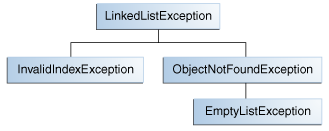

Cuando se enfrenta a la elección del tipo de excepción a lanzar, puede o usar una escrita por alguien más — la plataforma de Java ofrece un montón de clases exception que puede usar — o puede escribir una por su cuenta. Escribirá sus propias clases de excepción si responde sí a alguna de las siguientes preguntas; de otra forma, puede probablemente usar alguna otra.
Suponga que está escribiendo una clase de lista enlazada. La clase soporta los siguientes métodos, entre otros:
objectAt(int n) — Devuelve el objeto en la posición n de la lista.
Lanza una excepción si el argumento es menor que 0 o mayor que el número de objetos actualmente en la lista.
firstObject() — Devuelve el primer objeto en la lista. Lanza una excepción si la
lista no contiene objetos.
indexOf(Object o) — Busca en la lista por el Object especificado y
devuelve su posición en la lista. Lanza una excepción si el objeto pasado al método no está en la lista.
La clase de lista enlazada puede lanzar múltiples excepciones, y sería conveniente ser capaz de capturar todas las excepciones lanzadas por la lista enlazada con un manejador de excepción. También, si planea distribuir su lista enlazada en un paquete, toda el código relacionado debería ser empaquetado junto. Así, la lista enlazada debería ofrecer su conjunto propio de clases exception.
La siguiente figura ilustra una posible jerarquía de clases para las excepciones lanzadas por la lista enlazada.

Ejemplo de jerarquía de clases exception.
Cualquier subclase de Exception puede ser usada como clase padre de
LinkedListException. Sin embargo, una rápida lectura de esas subclases muestra que son
inapropiadas porque son o demasiado especializadas o completamente no relacionadas con
LinkedListException. Por lo tanto, la clase padre de LinkedListException
debería ser Exception.
La mayoría de los applets y aplicaciones que escriba lanzarán objetos que son Exceptions.
Errors son normalmente usados para los errores serios, y graves en el sistema, tales como aquellos
que impiden que la MVJ se ejecute.
Exception a los nombres de todas las clases que heredan (directa o indirectamente) de la clase
Exception.